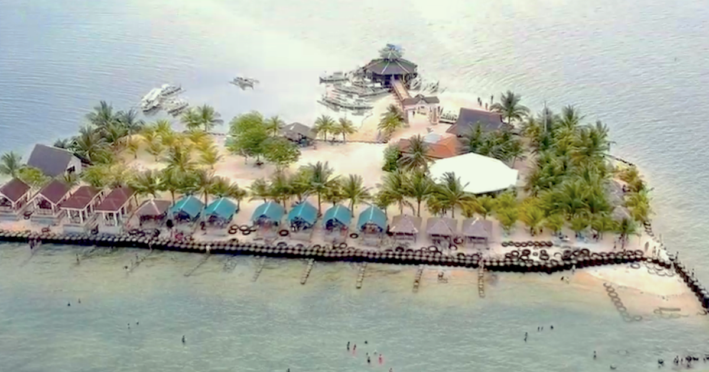

The Province of Davao del Sur is classified as a first class province. The province is a major producer of rice, corn, coconut, sugarcane, cacao, mango and banana.Fishery production in the province is sourced from captured fish and aquaculture.DAVAO is a region of contrast and diversity, home to a variety of tourism lures, from stunning islands and beaches, picturesque mountain ranges, stunning waterfalls, crystal clear lakes and rivers, and lush rainforests to vibrant cities and idyllic provinces with interesting arts and rich cultural attractions.
HISTORY
The Province of Davao del Sur has its humble beginnings, even before it functioned as a province on July 1, 1967.Local historians claim that the word “DAVAO” came from the phonetic blending of the words of the Bagobo subgroups when referring to Davao River, an essential waterway which empties itself into Davao Gulf near the city. The aboriginal Obos who dwell in the hinterlands of the region called the river, Davoh, the Clatta or Guiangans called it Duhwow, or Davau, and the Tagabawa Bagobo, Dabu. To the Obos, the word davoh means a place “beyond the high grounds”, including the settlements located at the mouth of Davao River which were surrounded by high rolling hills.
GEOGRAPHY
Davao del Sur covers a total area of 2,163.98 square kilometres (835.52 sq mi)[7] occupying the southwestern section of the Davao Region in Mindanao. When Davao City is included for geographical purposes, the province's land area is 4,607.59 square kilometres (1,779.00 sq mi).[7] The province is bounded by Davao del Norte to the north; Davao Occidental to the south-east; North Cotabato and Sultan Kudarat to the west; South Cotabato and Sarangani to the south-west; and Davao Gulf to the east.The province is composed of sandy beaches and outlying islands, agricultural plains and valleys, rainforests, swamps, rolling hills and mountains, including the Philippines' highest peak, Mount Apo, which is at 2,954 metres (9,692 ft) above sea level.
DEMOGRAPHICS
Davao del Sur is an ethnic mix of Visayans (mostly Cebuanos), Chinese, Japanese, and Koreans with a number of indigenous ethnic groups scattered across the province. The Cebuano language, with Davaoeño as its regional variant, is the main language of the province, although Filipino and English are also widely spoken and used in government functions and publications. Since the late 20th century, a linguistic phenomenon has developed in the Metro Davao area whereby locals have either shifted to the 'national language' (Filipino) or significantly mix Filipino terms and grammar into their Cebuano speech.
ECONOMY
The colorful artistic heritage of Davao stems from the rich culture of its tribes. For the Bagobos, aesthetics is the meticulous carving of weapons; the elaborate decoration of inlaid metal boxes with bells; and the ornamentation of their abaca fiber dress with embroidery, shells, beads and metal discs. The Mandayas, on the other hand, have a solid tradition in weaving. To produce their famed coarse textured cloth, abaca fiber is colored with earth dyes and woven on a backstrap loom.
TOURISM

Some of the top breathtaking tourist spots in Mindanao and also some of the best places to visit in the Philippines include the laidback surfing hotspot called Siargao Island, the tropical beaches of Samal Island dubbed the largest resort city, the small but beautiful island of Camiguin that's blessed with white sand beaches, and the multitude of waterfalls in Iligan. Mindanao is also home to some of the top island hopping in the Philippines. As a mountainous region, Mindanao is also home to Mount Apo, the highest mountain in the country and famous for hiking tours.
SCHOOL AND UNIVERSITIES
University of Mindanao-Main Campus
Polytechnic College of Davao del Sur
University of Southeastern Philippines
Cor Jesu College Inc.
Ateneo de Davao University
Mindanao Medical Foundation College
Former Southern Philippines Agri-Business and Marine and Aquatic School of Technology